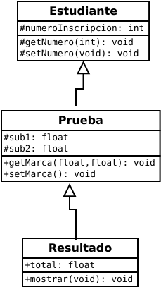
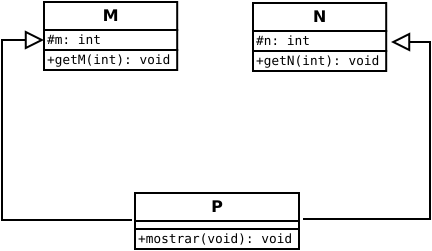

Superclase
Superclase Esta clase es la base para heredar características y los métodos a las subclases. Por lo que a una superclase se le puede llamar clase base.
Herencia múltiple. Las características y métodos se transmiten de varias clases base (superclases) a una o varias subclases.
El pardigma orientado a objetos. La herencia múltiple es una característica en este paradigma. Pero no quiere decir que todos los lenguajes que se pretenden ostentar como orientados a objetos, aprovechen el uso de la herencia múltiple.
Programa 1 en C++. Con herencia jerarquica.
#include <iostream>
using namespace std;
class Estudiante {
protected:
int numeroInscripcion;
protected:
void getNumero(int);
void setNumero(void);
};
void Estudiante :: getNumero(int a) {
numeroInscripcion = a;
}
void Estudiante :: setNumero() {
cout << "Numero de inscripcion: " << numeroInscripcion << "\n" ;
}
class Prueba : public Estudiante {
protected:
float sub1;
float sub2;
public:
void getMarca(float, float);
void setMarca(void);
};
void Prueba :: getMarca(float b, float c) {
sub1 = b;
sub2 = c;
}
void Prueba :: setMarca() {
cout << "Marca en sub1 = " << sub1 << "\n" ;
cout << "Marca en sub2 = " << sub2 << "\n" ;
}
class Resultado : public Prueba {
float total;
public:
void mostrar(void);
};
void Resultado :: mostrar() {
total = sub1 + sub2;
setNumero();
setMarca();
cout << "Total = " << total << "\n" ;
}
int main() {
Resultado estudiante1;
estudiante1.getNumero(111);
estudiante1.getMarca(75.0, 59.5);
estudiante1.mostrar();
return 0;
}
Programa 2 en C++. Con herencia múltiple.
#include <iostream>
using namespace std;
class M {
protected:
int m;
public:
void getM(int);
};
class N {
protected:
int n;
public:
void getN(int);
};
class P : public M, public N {
public:
void mostrar(void);
};
void M :: getM(int x) {
m = x;
}
void N :: getN(int y) {
n = y;
}
void P :: mostrar(void) {
cout << "m = " << m << "\n" ;
cout << "n = " << n << "\n" ;
cout << "m * n = " << m * n << "\n" ;
}
int main() {
P p;
p.getM(10);
p.getN(20);
p.mostrar();
return 0;
}
Diagrama de clase del programa 1. Herencia jerarquica.

Diagrama de clase del programa 2. Herencia múltiple.
